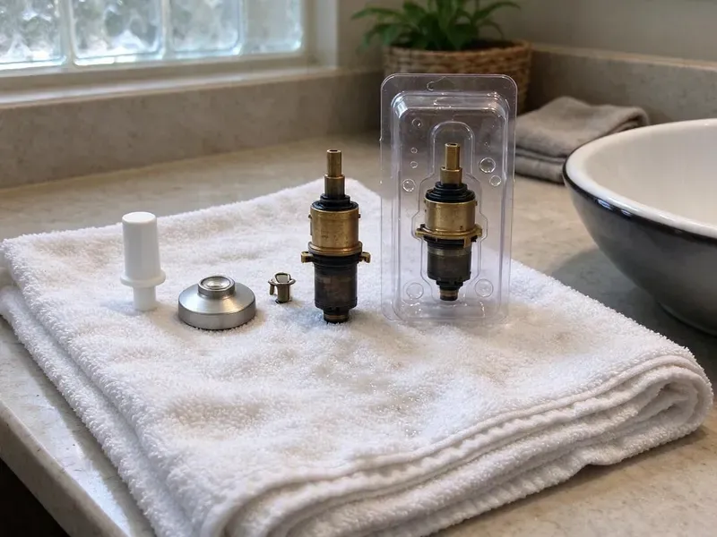

Shower Installation in Oxford, MS
DFM Plumbing installs shower plumbing in Oxford, MS for remodels and new construction, with every valve pressure-tested before the walls close.
- Pans Flood-Tested
- Flat Price for Plumbing
- Workmanship Guarantee
- Remodel-Friendly Scheduling

Planning a New Shower in Oxford, MS?
Ask for a flat quote on the plumbing from DFM Plumbing.
Shower Remodel Plumbing in Oxford, MS
DFM Plumbing installs the plumbing for new showers, including valves, supply lines, arms, body sprays, pans and drains. We set each part at the right height and depth for your finished wall, then pressure-test the whole thing before tile goes on. Hidden leaks are expensive. That test is cheap insurance.
Work we handle every week:
- Valve Rough-In for All Shower Styles
- Multi-Head, Body Spray and Rain Shower Layouts
- Pressure-Balance and Thermostatic Valve Rough-In

Additional Bathroom Plumbing Services in Oxford, MS
From toilets to showers, our bathroom plumbing team in Oxford, MS repairs, installs, and replaces every fixture with clean, code-compliant work.


Customers
Why Choose DFM Plumbing for Shower Installation in Oxford, MS?
Getting it right the first time matters most behind tile. We test the valve, the supplies and the drain before the walls close, and tiled pans get a 24-hour flood test. Leaks show up fast.
- Local Knowledge, Our plumbers know the common bathroom layouts in Oxford homes.
- Clean Work, We protect finished floors and clean up each day during remodels.
- Correct Slope, Pans and drains are set so nothing puddles toward the drain.
Citywide Coverage
No part of Oxford is too far for a shower job. We route trucks by area each day, so the plumber assigned to your remodel is usually working nearby and can come back quickly for inspections or trim. Inspection days stay on track.
Experienced Team
Each plumber on our crew understands pressure, flow and drainage. That matters on multi-head showers, where pipe size and valve capacity decide whether the third outlet gets a strong spray or a weak dribble. We do the math first.
Safety-First Approach
Waterproofing and venting keep a shower from rotting the walls. Every joint gets sealed, the pan gets flood-tested and we confirm the bath has a working exhaust fan. Long, hot and humid summers are the main stress on plumbing in Mississippi, and humidity keeps crawlspaces damp for much of the year.
Trusted Certified Oxford Plumbing Services Professionals
At DFM Plumbing, we are proud to offer certified plumbing services throughout Oxford, MS. Those papers on the wall mean something. Every repair, install and maintenance visit follows strict safety and quality rules, and the plumbers doing the work carry recognized industry credentials.
Call Us Now PHCC Plumbing Contractor Recognition
PHCC Plumbing Contractor Recognition Better Business Bureau (BBB) Accreditation
Better Business Bureau (BBB) Accreditation Angi Certified Pro
Angi Certified Pro ISO 9001 Quality Management Certification
ISO 9001 Quality Management CertificationHow We Install Showers in Oxford, MS
Barrier-Free Walk-In Showers in Oxford, MS
Barrier-free entries need careful drain placement. We work with your tile setter on the waterproofing membrane and the slope, since water has to reach the drain before it can roll out the open side of the shower. Long, hot and humid summers are the main stress on plumbing in Mississippi, and humidity keeps crawlspaces damp for much of the year. Pan material follows from that.

Budget Shower Upgrades in Oxford, MS
Budget showers can still be built right. A one-piece unit with a good valve is a fraction of the cost of tile, and set properly on mortar it holds up for a long time. The valve is where to spend. The quote covers everything up front.
Tiled Walk-In Shower Installation in Oxford
Frameless glass walk-ins are popular, and the plumbing behind them has to be dead on. We install the valve, the head, an optional handheld and the drain, then set the mortar bed or foam pan to slope toward the drain at a quarter inch per foot. Testing follows. The valve gets a pressure test and the pan a 24-hour flood test before tile.
Tub and Shower Combo Installation in Oxford
Setting a tub is mostly about level and support. Acrylic and steel tubs get mortar or foam underneath, while cast iron rests on a level ledger, which keeps the caulk line intact. The valve goes in next. Spout and head go at the heights you choose, and the overflow gasket gets a water test.
Shower Stall Installation in Oxford
A one-piece stall needs a level, fully supported base. We set fiberglass and acrylic bases in a bed of mortar or setting compound so the floor of the unit does not flex underfoot, since flex is what cracks a base within a couple of years. Then the drain goes in. We check the flow at the head once the trim is on.
Shower Valve and Fixture Installation in Oxford, MS
Pressure-balancing valves are the baseline for any new shower. Thermostatic valves step up from there, holding an exact temperature and letting you set volume separately, which suits rain heads, handhelds and body sprays. Either one protects against scalding. We help you choose based on how many outlets you plan.
Commercial Shower Installation in Oxford, MS
Locker rooms need showers that take hundreds of uses a day. We install commercial valves with tamper-resistant trim, vandal-resistant heads and drains sized for several showers running at once, all to commercial code. We work around your business. A master mixing valve can protect the whole room from scalding.

New Construction Shower Installation in Oxford, MS
New homes get their shower plumbing during framing. We rough in valves, supply lines and drains once the walls are framed, set each valve to the depth of the planned finish and locate the drain for the pan you picked. Inspection comes next. We return for trim after tile.
Local Shower Installation Near Me, Oxford, MS
On a remodel, we show up when we say we will. Pricing is clear, testing happens before walls close and our guarantee covers the work. We clean up each day.
A local plumber knows local bathrooms. We have opened plenty of local bathroom walls and know which homes are on slab and which have crawlspaces. That shapes the quote.
DFM Plumbing at a Glance
- Fully licensed plumbing team covering Oxford, MS
- 24/7 emergency service with same-day scheduling
- Upfront, flat-rate pricing before work begins
- 4.8-star rated by 503+ Mississippi customers
Oxford Map
Oxford Information
- Population
- 27,008
- Area codes
- Local
- Service area
- Oxford and towns within a 40 mile drive
- Nearby
- Olive Branch, Tupelo, Southaven, Horn Lake
Much of the water in Mississippi comes from underground aquifers and is fairly soft, though some supplies carry iron or a sulfur smell. Slab and crawlspace foundations are typical, and soil movement under a slab can crack drain lines and supply pipes. That is why every valve gets a pressure test and every pan a flood test before tile goes on in Oxford, MS.
Expert Services
Call DFM Plumbing for honest, reliable plumbing from people who know the trade in Oxford, MS.
Our Specialized Plumbing Services in Oxford, MS
At DFM Plumbing, we handle the full list of plumbing services across Oxford, MS. From leak detection to full system installs, our team works fast and charges fair prices on homes and commercial properties alike. Explore our core services below:


From Rough-In to Trim in Oxford, MS
We start with the layout, then the rough-in and the tests.
Get a Quote
Call (601) 265-9260 to talk through your shower plans and timeline. We quote the plumbing as a flat price.
Rough-In and Test
We install the valve, supply lines and drain and pressure-test before walls close. Pans are flood-tested.
Trim and Finish
After tile, we install the head, handles and trim. Then we test pressure and temperature and clean up.
Frequently Asked Questions About Shower Installation in Oxford
Most shower installations in Oxford, MS fall between $1,000 and $5,000. Simple tub-shower combos come in low, and tiled walk-ins with upgraded valves and drains come in high. Plumbing changes drive the spread. We quote after a site visit.
Both stop scalding, but they work differently. A pressure-balancing valve adjusts the hot and cold ratio when pressure changes elsewhere in the house, while a thermostatic valve holds an exact temperature no matter what the pressure does. The thermostatic kind is pricier.
We do these all the time in Oxford. We remove the tub, set a new pan with the drain relocated and raise the valve, no full remodel needed. Accessibility improves a lot.
Yes, often. We do a lot of these. On slab homes, the drain usually has to move from the end of the old tub to the center of the new pan, which means cutting concrete.
Usually yes. New showers and relocated drains generally require a permit and a rough-in inspection before the walls go up. We handle the permit.
Large rain heads and multiple outlets use more hot water. We look at the heater's size and recovery rate and tell you if it needs an upgrade.
New showers, tub-to-shower conversions and drain moves often need one. Requirements vary by city, and we check and handle permits as needed.
Kohler, Moen, Delta, American Standard and Sterling are what we install most. We can also work with a brand you prefer or recommend options based on your budget and the features you want, like a handheld or a thermostatic valve. Availability matters too.
What Our Customers Say About Our Plumbing Experts

Lisa C.
Water was pouring out from under the washing machine on a holiday weekend. DFM Plumbing talked me through closing the valves over the phone and had a plumber at the house within ninety minutes. It was a burst fill hose.
Emergency Plumbing · Olive Branch, MSRachel N.
Hard water was leaving white crust on every faucet and our dishwasher was struggling. The tech tested the water, recommended a softener sized for a family of five, and installed it with a bypass valve in one afternoon. The spots on our glasses are gone.
Water Softener · Olive Branch, MS
Angela D.
Our sump pump quit during a storm and the water was an inch from the basement carpet. DFM Plumbing put in a new pump with a battery backup that same evening. We have had two heavy rains since. It kicked on both times.
Sump Pump · Columbus, MS
Jessica T.
We were adding a gas range in a kitchen remodel and needed a new line run from the meter. The plumber pulled the permit, ran the pipe through the crawl space, and had it inspected and approved within the week.
Gas Line Repair · Oxford, MS
James P.
Our restaurant had a slow leak at the hand sink that was rotting the cabinet base. DFM Plumbing came in at six in the morning before prep, replaced the trap and both supply lines, and was packed up before my first cook clocked in.
Commercial Plumbing · Olive Branch, MS
Daniel K.
A pipe burst in the garage ceiling at 11 at night. Someone answered on the second ring, and the plumber was in my driveway about fifty minutes later. He shut off the main, cut out the split section, and had water back on before 2 am.
Emergency Plumbing · Oxford, MS